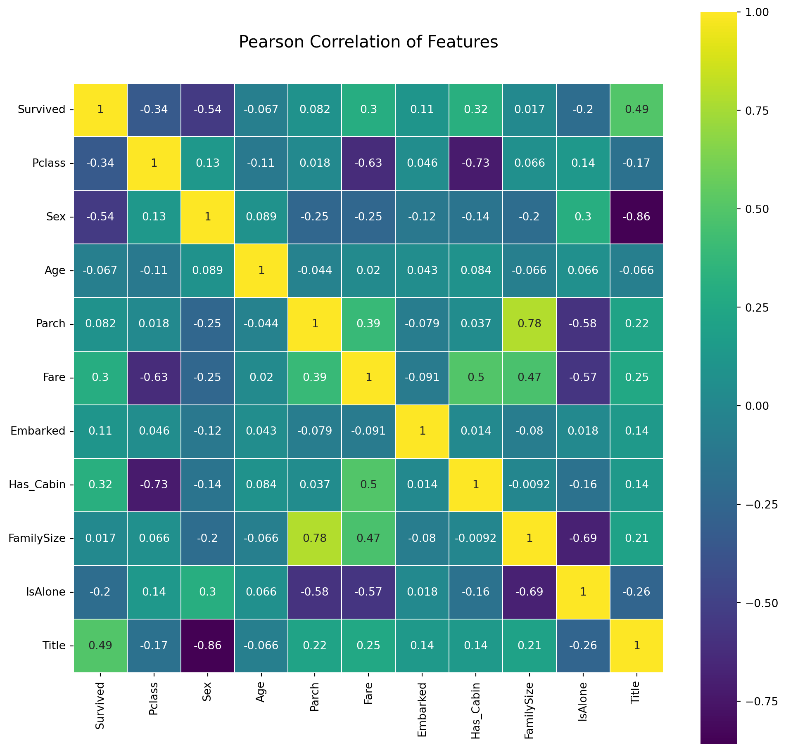

# imports needed for the script
import numpy as np
import pandas as pd
import re
import seaborn as sns
import matplotlib.pyplot as pltKapal Titanic
kapal
titanic
Normalisasi data kapal titanic
from sklearn import tree
from sklearn.metrics import accuracy_score
from sklearn.model_selection import KFold
from sklearn.model_selection import cross_val_score
from IPython.display import Image as PImage
from subprocess import check_call
from PIL import Image, ImageDraw, ImageFonttitanic_train = pd.read_csv('titanic_train.csv')titanic_test = pd.read_csv('titanic_test.csv')
PassengerId = titanic_test['PassengerId']titanic_train.head()| PassengerId | Survived | Pclass | Name | Sex | Age | SibSp | Parch | Ticket | Fare | Cabin | Embarked | |
|---|---|---|---|---|---|---|---|---|---|---|---|---|
| 0 | 1 | 0 | 3 | Braund, Mr. Owen Harris | male | 22.0 | 1 | 0 | A/5 21171 | 7.2500 | NaN | S |
| 1 | 2 | 1 | 1 | Cumings, Mrs. John Bradley (Florence Briggs Th... | female | 38.0 | 1 | 0 | PC 17599 | 71.2833 | C85 | C |
| 2 | 3 | 1 | 3 | Heikkinen, Miss. Laina | female | 26.0 | 0 | 0 | STON/O2. 3101282 | 7.9250 | NaN | S |
| 3 | 4 | 1 | 1 | Futrelle, Mrs. Jacques Heath (Lily May Peel) | female | 35.0 | 1 | 0 | 113803 | 53.1000 | C123 | S |
| 4 | 5 | 0 | 3 | Allen, Mr. William Henry | male | 35.0 | 0 | 0 | 373450 | 8.0500 | NaN | S |
titanic_test.head()| PassengerId | Pclass | Name | Sex | Age | SibSp | Parch | Ticket | Fare | Cabin | Embarked | |
|---|---|---|---|---|---|---|---|---|---|---|---|
| 0 | 892 | 3 | Kelly, Mr. James | male | 34.5 | 0 | 0 | 330911 | 7.8292 | NaN | Q |
| 1 | 893 | 3 | Wilkes, Mrs. James (Ellen Needs) | female | 47.0 | 1 | 0 | 363272 | 7.0000 | NaN | S |
| 2 | 894 | 2 | Myles, Mr. Thomas Francis | male | 62.0 | 0 | 0 | 240276 | 9.6875 | NaN | Q |
| 3 | 895 | 3 | Wirz, Mr. Albert | male | 27.0 | 0 | 0 | 315154 | 8.6625 | NaN | S |
| 4 | 896 | 3 | Hirvonen, Mrs. Alexander (Helga E Lindqvist) | female | 22.0 | 1 | 1 | 3101298 | 12.2875 | NaN | S |
# Waening: Beware of actually copying the dataframe instead of just referencing it
# "original_train = train" will create a reference to the train variable (changes in 'titanic_train' will apply to 'original_train')
original_train = titanic_train.copy() # Using 'copy()" allows to clone the dataset, creating a different object with the same values
# Feature engineering steps taken from Sina and Anisotropic, with minor changes to avoid warnings
full_data = [titanic_train, titanic_test]
# Feature that tells wheather a passenger had a cabin on the Titanic
titanic_train['Has_Cabin'] = titanic_train["Cabin"].apply(lambda x:0 if type(x) == float else 1)
titanic_test['Has_Cabin'] = titanic_test["Cabin"].apply(lambda x:0 if type (x) == float else 1)titanic_train| PassengerId | Survived | Pclass | Name | Sex | Age | SibSp | Parch | Ticket | Fare | Cabin | Embarked | Has_Cabin | |
|---|---|---|---|---|---|---|---|---|---|---|---|---|---|
| 0 | 1 | 0 | 3 | Braund, Mr. Owen Harris | male | 22.0 | 1 | 0 | A/5 21171 | 7.2500 | NaN | S | 0 |
| 1 | 2 | 1 | 1 | Cumings, Mrs. John Bradley (Florence Briggs Th... | female | 38.0 | 1 | 0 | PC 17599 | 71.2833 | C85 | C | 1 |
| 2 | 3 | 1 | 3 | Heikkinen, Miss. Laina | female | 26.0 | 0 | 0 | STON/O2. 3101282 | 7.9250 | NaN | S | 0 |
| 3 | 4 | 1 | 1 | Futrelle, Mrs. Jacques Heath (Lily May Peel) | female | 35.0 | 1 | 0 | 113803 | 53.1000 | C123 | S | 1 |
| 4 | 5 | 0 | 3 | Allen, Mr. William Henry | male | 35.0 | 0 | 0 | 373450 | 8.0500 | NaN | S | 0 |
| ... | ... | ... | ... | ... | ... | ... | ... | ... | ... | ... | ... | ... | ... |
| 886 | 887 | 0 | 2 | Montvila, Rev. Juozas | male | 27.0 | 0 | 0 | 211536 | 13.0000 | NaN | S | 0 |
| 887 | 888 | 1 | 1 | Graham, Miss. Margaret Edith | female | 19.0 | 0 | 0 | 112053 | 30.0000 | B42 | S | 1 |
| 888 | 889 | 0 | 3 | Johnston, Miss. Catherine Helen "Carrie" | female | NaN | 1 | 2 | W./C. 6607 | 23.4500 | NaN | S | 0 |
| 889 | 890 | 1 | 1 | Behr, Mr. Karl Howell | male | 26.0 | 0 | 0 | 111369 | 30.0000 | C148 | C | 1 |
| 890 | 891 | 0 | 3 | Dooley, Mr. Patrick | male | 32.0 | 0 | 0 | 370376 | 7.7500 | NaN | Q | 0 |
891 rows × 13 columns
titanic_test| PassengerId | Pclass | Name | Sex | Age | SibSp | Parch | Ticket | Fare | Cabin | Embarked | Has_Cabin | |
|---|---|---|---|---|---|---|---|---|---|---|---|---|
| 0 | 892 | 3 | Kelly, Mr. James | male | 34.5 | 0 | 0 | 330911 | 7.8292 | NaN | Q | 0 |
| 1 | 893 | 3 | Wilkes, Mrs. James (Ellen Needs) | female | 47.0 | 1 | 0 | 363272 | 7.0000 | NaN | S | 0 |
| 2 | 894 | 2 | Myles, Mr. Thomas Francis | male | 62.0 | 0 | 0 | 240276 | 9.6875 | NaN | Q | 0 |
| 3 | 895 | 3 | Wirz, Mr. Albert | male | 27.0 | 0 | 0 | 315154 | 8.6625 | NaN | S | 0 |
| 4 | 896 | 3 | Hirvonen, Mrs. Alexander (Helga E Lindqvist) | female | 22.0 | 1 | 1 | 3101298 | 12.2875 | NaN | S | 0 |
| ... | ... | ... | ... | ... | ... | ... | ... | ... | ... | ... | ... | ... |
| 413 | 1305 | 3 | Spector, Mr. Woolf | male | NaN | 0 | 0 | A.5. 3236 | 8.0500 | NaN | S | 0 |
| 414 | 1306 | 1 | Oliva y Ocana, Dona. Fermina | female | 39.0 | 0 | 0 | PC 17758 | 108.9000 | C105 | C | 1 |
| 415 | 1307 | 3 | Saether, Mr. Simon Sivertsen | male | 38.5 | 0 | 0 | SOTON/O.Q. 3101262 | 7.2500 | NaN | S | 0 |
| 416 | 1308 | 3 | Ware, Mr. Frederick | male | NaN | 0 | 0 | 359309 | 8.0500 | NaN | S | 0 |
| 417 | 1309 | 3 | Peter, Master. Michael J | male | NaN | 1 | 1 | 2668 | 22.3583 | NaN | C | 0 |
418 rows × 12 columns
# Create new feature FamilySize as a combination of SibSp and Parch
for dataset in full_data:
dataset['FamilySize'] = dataset['SibSp'] + dataset['Parch'] + 1
# Create new feature IsAlone from FamilySize
for dataset in full_data:
dataset['IsAlone'] = 0
dataset.loc[dataset['FamilySize'] == 1, 'IsAlone'] = 1titanic_train| PassengerId | Survived | Pclass | Name | Sex | Age | SibSp | Parch | Ticket | Fare | Cabin | Embarked | Has_Cabin | FamilySize | IsAlone | |
|---|---|---|---|---|---|---|---|---|---|---|---|---|---|---|---|
| 0 | 1 | 0 | 3 | Braund, Mr. Owen Harris | male | 22.0 | 1 | 0 | A/5 21171 | 7.2500 | NaN | S | 0 | 2 | 0 |
| 1 | 2 | 1 | 1 | Cumings, Mrs. John Bradley (Florence Briggs Th... | female | 38.0 | 1 | 0 | PC 17599 | 71.2833 | C85 | C | 1 | 2 | 0 |
| 2 | 3 | 1 | 3 | Heikkinen, Miss. Laina | female | 26.0 | 0 | 0 | STON/O2. 3101282 | 7.9250 | NaN | S | 0 | 1 | 1 |
| 3 | 4 | 1 | 1 | Futrelle, Mrs. Jacques Heath (Lily May Peel) | female | 35.0 | 1 | 0 | 113803 | 53.1000 | C123 | S | 1 | 2 | 0 |
| 4 | 5 | 0 | 3 | Allen, Mr. William Henry | male | 35.0 | 0 | 0 | 373450 | 8.0500 | NaN | S | 0 | 1 | 1 |
| ... | ... | ... | ... | ... | ... | ... | ... | ... | ... | ... | ... | ... | ... | ... | ... |
| 886 | 887 | 0 | 2 | Montvila, Rev. Juozas | male | 27.0 | 0 | 0 | 211536 | 13.0000 | NaN | S | 0 | 1 | 1 |
| 887 | 888 | 1 | 1 | Graham, Miss. Margaret Edith | female | 19.0 | 0 | 0 | 112053 | 30.0000 | B42 | S | 1 | 1 | 1 |
| 888 | 889 | 0 | 3 | Johnston, Miss. Catherine Helen "Carrie" | female | NaN | 1 | 2 | W./C. 6607 | 23.4500 | NaN | S | 0 | 4 | 0 |
| 889 | 890 | 1 | 1 | Behr, Mr. Karl Howell | male | 26.0 | 0 | 0 | 111369 | 30.0000 | C148 | C | 1 | 1 | 1 |
| 890 | 891 | 0 | 3 | Dooley, Mr. Patrick | male | 32.0 | 0 | 0 | 370376 | 7.7500 | NaN | Q | 0 | 1 | 1 |
891 rows × 15 columns
titanic_test| PassengerId | Pclass | Name | Sex | Age | SibSp | Parch | Ticket | Fare | Cabin | Embarked | Has_Cabin | FamilySize | IsAlone | |
|---|---|---|---|---|---|---|---|---|---|---|---|---|---|---|
| 0 | 892 | 3 | Kelly, Mr. James | male | 34.5 | 0 | 0 | 330911 | 7.8292 | NaN | Q | 0 | 1 | 1 |
| 1 | 893 | 3 | Wilkes, Mrs. James (Ellen Needs) | female | 47.0 | 1 | 0 | 363272 | 7.0000 | NaN | S | 0 | 2 | 0 |
| 2 | 894 | 2 | Myles, Mr. Thomas Francis | male | 62.0 | 0 | 0 | 240276 | 9.6875 | NaN | Q | 0 | 1 | 1 |
| 3 | 895 | 3 | Wirz, Mr. Albert | male | 27.0 | 0 | 0 | 315154 | 8.6625 | NaN | S | 0 | 1 | 1 |
| 4 | 896 | 3 | Hirvonen, Mrs. Alexander (Helga E Lindqvist) | female | 22.0 | 1 | 1 | 3101298 | 12.2875 | NaN | S | 0 | 3 | 0 |
| ... | ... | ... | ... | ... | ... | ... | ... | ... | ... | ... | ... | ... | ... | ... |
| 413 | 1305 | 3 | Spector, Mr. Woolf | male | NaN | 0 | 0 | A.5. 3236 | 8.0500 | NaN | S | 0 | 1 | 1 |
| 414 | 1306 | 1 | Oliva y Ocana, Dona. Fermina | female | 39.0 | 0 | 0 | PC 17758 | 108.9000 | C105 | C | 1 | 1 | 1 |
| 415 | 1307 | 3 | Saether, Mr. Simon Sivertsen | male | 38.5 | 0 | 0 | SOTON/O.Q. 3101262 | 7.2500 | NaN | S | 0 | 1 | 1 |
| 416 | 1308 | 3 | Ware, Mr. Frederick | male | NaN | 0 | 0 | 359309 | 8.0500 | NaN | S | 0 | 1 | 1 |
| 417 | 1309 | 3 | Peter, Master. Michael J | male | NaN | 1 | 1 | 2668 | 22.3583 | NaN | C | 0 | 3 | 0 |
418 rows × 14 columns
# Remove all NULLS in the Embarked column
for dataset in full_data:
dataset['Embarked'] = dataset['Embarked'].fillna('S')
# Remove all NULLS in the Fare column
for dataset in full_data:
dataset['Fare'] = dataset['Fare'].fillna(titanic_train['Fare'].median())
# Remove all NULLS in the Age column
for dataset in full_data:
age_avg = dataset['Age'].mean()
age_std = dataset['Age'].std()
age_null_count = dataset['Age'].isnull().sum()
age_null_random_list = np.random.randint(age_avg - age_std, age_avg + age_std, size=age_null_count)
# Next line has been improved to avoid warning
dataset.loc[np.isnan(dataset['Age']), 'Age'] = age_null_random_list
dataset['Age'] = dataset['Age'].astype(int)dataset.head()| PassengerId | Pclass | Name | Sex | Age | SibSp | Parch | Ticket | Fare | Cabin | Embarked | Has_Cabin | FamilySize | IsAlone | |
|---|---|---|---|---|---|---|---|---|---|---|---|---|---|---|
| 0 | 892 | 3 | Kelly, Mr. James | male | 34 | 0 | 0 | 330911 | 7.8292 | NaN | Q | 0 | 1 | 1 |
| 1 | 893 | 3 | Wilkes, Mrs. James (Ellen Needs) | female | 47 | 1 | 0 | 363272 | 7.0000 | NaN | S | 0 | 2 | 0 |
| 2 | 894 | 2 | Myles, Mr. Thomas Francis | male | 62 | 0 | 0 | 240276 | 9.6875 | NaN | Q | 0 | 1 | 1 |
| 3 | 895 | 3 | Wirz, Mr. Albert | male | 27 | 0 | 0 | 315154 | 8.6625 | NaN | S | 0 | 1 | 1 |
| 4 | 896 | 3 | Hirvonen, Mrs. Alexander (Helga E Lindqvist) | female | 22 | 1 | 1 | 3101298 | 12.2875 | NaN | S | 0 | 3 | 0 |
# Define function to extract titles from passenger names
def get_title(name):
title_search = re.search(' ([A-Za-z]+)\.', name)
# If the title exists, extract and return it.
if title_search:
return title_search.group(1)
return ""
for dataset in full_data:
dataset['Title'] = dataset['Name'].apply(get_title)
# Group all non-common titles into one single grouping "Rare"
for dataset in full_data:
dataset['Title'] = dataset['Title'].replace(['Lady', 'Countess', 'Capt', 'Col', 'Don', 'Dr', 'Major', 'Rev', 'Sir', 'Jonkheer', 'Dona'], 'Rare')
dataset['Title'] = dataset['Title'].replace('Mlle', 'Miss')
dataset['Title'] = dataset['Title'].replace('Ms', 'Miss')
dataset['Title'] = dataset['Title'].replace('Mme', 'Mrs')dataset.head()| PassengerId | Pclass | Name | Sex | Age | SibSp | Parch | Ticket | Fare | Cabin | Embarked | Has_Cabin | FamilySize | IsAlone | Title | |
|---|---|---|---|---|---|---|---|---|---|---|---|---|---|---|---|
| 0 | 892 | 3 | Kelly, Mr. James | male | 34 | 0 | 0 | 330911 | 7.8292 | NaN | Q | 0 | 1 | 1 | Mr |
| 1 | 893 | 3 | Wilkes, Mrs. James (Ellen Needs) | female | 47 | 1 | 0 | 363272 | 7.0000 | NaN | S | 0 | 2 | 0 | Mrs |
| 2 | 894 | 2 | Myles, Mr. Thomas Francis | male | 62 | 0 | 0 | 240276 | 9.6875 | NaN | Q | 0 | 1 | 1 | Mr |
| 3 | 895 | 3 | Wirz, Mr. Albert | male | 27 | 0 | 0 | 315154 | 8.6625 | NaN | S | 0 | 1 | 1 | Mr |
| 4 | 896 | 3 | Hirvonen, Mrs. Alexander (Helga E Lindqvist) | female | 22 | 1 | 1 | 3101298 | 12.2875 | NaN | S | 0 | 3 | 0 | Mrs |
for dataset in full_data:
# Mapping Sex
dataset['Sex'] = dataset['Sex'].map( {'female': 0, 'male': 1} ).astype(int)
# Mapping Titles
title_mapping = {"Mr": 1, "Master": 2, "Mrs": 3, "Miss": 4, "Rare": 5}
dataset['Title'] = dataset['Title'].map(title_mapping)
dataset['Title'] = dataset['Title'].fillna(0)
# Mapping Embarked
dataset['Embarked'] = dataset['Embarked'].map( {'S': 0, 'C': 1, 'Q': 2} ).astype(int)
# Mapping Fare
dataset.loc[ dataset['Fare'] <= 7.91, 'Fare'] = 0
dataset.loc[(dataset['Fare'] > 7.91) & (dataset['Fare'] <= 14.454), 'Fare'] = 1
dataset.loc[(dataset['Fare'] > 14.454) & (dataset['Fare'] <= 31), 'Fare'] = 2
dataset.loc[ dataset['Fare'] > 31, 'Fare'] = 3
dataset['Fare'] = dataset['Fare'].astype(int)
# Mapping Age
dataset.loc[ dataset['Age'] <= 16, 'Age'] = 0
dataset.loc[(dataset['Age'] > 16) & (dataset['Age'] <= 32), 'Age'] = 1
dataset.loc[(dataset['Age'] > 32) & (dataset['Age'] <= 48), 'Age'] = 2
dataset.loc[(dataset['Age'] > 48) & (dataset['Age'] <= 64), 'Age'] = 3
dataset.loc[ dataset['Age'] > 64, 'Age'] ;dataset.head()| PassengerId | Pclass | Name | Sex | Age | SibSp | Parch | Ticket | Fare | Cabin | Embarked | Has_Cabin | FamilySize | IsAlone | Title | |
|---|---|---|---|---|---|---|---|---|---|---|---|---|---|---|---|
| 0 | 892 | 3 | Kelly, Mr. James | 1 | 2 | 0 | 0 | 330911 | 0 | NaN | 2 | 0 | 1 | 1 | 1 |
| 1 | 893 | 3 | Wilkes, Mrs. James (Ellen Needs) | 0 | 2 | 1 | 0 | 363272 | 0 | NaN | 0 | 0 | 2 | 0 | 3 |
| 2 | 894 | 2 | Myles, Mr. Thomas Francis | 1 | 3 | 0 | 0 | 240276 | 1 | NaN | 2 | 0 | 1 | 1 | 1 |
| 3 | 895 | 3 | Wirz, Mr. Albert | 1 | 1 | 0 | 0 | 315154 | 1 | NaN | 0 | 0 | 1 | 1 | 1 |
| 4 | 896 | 3 | Hirvonen, Mrs. Alexander (Helga E Lindqvist) | 0 | 1 | 1 | 1 | 3101298 | 1 | NaN | 0 | 0 | 3 | 0 | 3 |
titanic_test| PassengerId | Pclass | Name | Sex | Age | SibSp | Parch | Ticket | Fare | Cabin | Embarked | Has_Cabin | FamilySize | IsAlone | Title | |
|---|---|---|---|---|---|---|---|---|---|---|---|---|---|---|---|
| 0 | 892 | 3 | Kelly, Mr. James | 1 | 2 | 0 | 0 | 330911 | 0 | NaN | 2 | 0 | 1 | 1 | 1 |
| 1 | 893 | 3 | Wilkes, Mrs. James (Ellen Needs) | 0 | 2 | 1 | 0 | 363272 | 0 | NaN | 0 | 0 | 2 | 0 | 3 |
| 2 | 894 | 2 | Myles, Mr. Thomas Francis | 1 | 3 | 0 | 0 | 240276 | 1 | NaN | 2 | 0 | 1 | 1 | 1 |
| 3 | 895 | 3 | Wirz, Mr. Albert | 1 | 1 | 0 | 0 | 315154 | 1 | NaN | 0 | 0 | 1 | 1 | 1 |
| 4 | 896 | 3 | Hirvonen, Mrs. Alexander (Helga E Lindqvist) | 0 | 1 | 1 | 1 | 3101298 | 1 | NaN | 0 | 0 | 3 | 0 | 3 |
| ... | ... | ... | ... | ... | ... | ... | ... | ... | ... | ... | ... | ... | ... | ... | ... |
| 413 | 1305 | 3 | Spector, Mr. Woolf | 1 | 2 | 0 | 0 | A.5. 3236 | 1 | NaN | 0 | 0 | 1 | 1 | 1 |
| 414 | 1306 | 1 | Oliva y Ocana, Dona. Fermina | 0 | 2 | 0 | 0 | PC 17758 | 3 | C105 | 1 | 1 | 1 | 1 | 5 |
| 415 | 1307 | 3 | Saether, Mr. Simon Sivertsen | 1 | 2 | 0 | 0 | SOTON/O.Q. 3101262 | 0 | NaN | 0 | 0 | 1 | 1 | 1 |
| 416 | 1308 | 3 | Ware, Mr. Frederick | 1 | 1 | 0 | 0 | 359309 | 1 | NaN | 0 | 0 | 1 | 1 | 1 |
| 417 | 1309 | 3 | Peter, Master. Michael J | 1 | 1 | 1 | 1 | 2668 | 2 | NaN | 1 | 0 | 3 | 0 | 2 |
418 rows × 15 columns
titanic_train.drop(['PassengerId','Name','Ticket','Cabin','SibSp'], axis=1, inplace=True)titanic_train| Survived | Pclass | Sex | Age | Parch | Fare | Embarked | Has_Cabin | FamilySize | IsAlone | Title | |
|---|---|---|---|---|---|---|---|---|---|---|---|
| 0 | 0 | 3 | 1 | 1 | 0 | 0 | 0 | 0 | 2 | 0 | 1 |
| 1 | 1 | 1 | 0 | 2 | 0 | 3 | 1 | 1 | 2 | 0 | 3 |
| 2 | 1 | 3 | 0 | 1 | 0 | 1 | 0 | 0 | 1 | 1 | 4 |
| 3 | 1 | 1 | 0 | 2 | 0 | 3 | 0 | 1 | 2 | 0 | 3 |
| 4 | 0 | 3 | 1 | 2 | 0 | 1 | 0 | 0 | 1 | 1 | 1 |
| ... | ... | ... | ... | ... | ... | ... | ... | ... | ... | ... | ... |
| 886 | 0 | 2 | 1 | 1 | 0 | 1 | 0 | 0 | 1 | 1 | 5 |
| 887 | 1 | 1 | 0 | 1 | 0 | 2 | 0 | 1 | 1 | 1 | 4 |
| 888 | 0 | 3 | 0 | 1 | 2 | 2 | 0 | 0 | 4 | 0 | 4 |
| 889 | 1 | 1 | 1 | 1 | 0 | 2 | 1 | 1 | 1 | 1 | 1 |
| 890 | 0 | 3 | 1 | 1 | 0 | 0 | 2 | 0 | 1 | 1 | 1 |
891 rows × 11 columns
titanic_test=titanic_test.drop(['PassengerId','Name','Ticket','Cabin','SibSp'], axis=1)titanic_test| Pclass | Sex | Age | Parch | Fare | Embarked | Has_Cabin | FamilySize | IsAlone | Title | |
|---|---|---|---|---|---|---|---|---|---|---|
| 0 | 3 | 1 | 2 | 0 | 0 | 2 | 0 | 1 | 1 | 1 |
| 1 | 3 | 0 | 2 | 0 | 0 | 0 | 0 | 2 | 0 | 3 |
| 2 | 2 | 1 | 3 | 0 | 1 | 2 | 0 | 1 | 1 | 1 |
| 3 | 3 | 1 | 1 | 0 | 1 | 0 | 0 | 1 | 1 | 1 |
| 4 | 3 | 0 | 1 | 1 | 1 | 0 | 0 | 3 | 0 | 3 |
| ... | ... | ... | ... | ... | ... | ... | ... | ... | ... | ... |
| 413 | 3 | 1 | 2 | 0 | 1 | 0 | 0 | 1 | 1 | 1 |
| 414 | 1 | 0 | 2 | 0 | 3 | 1 | 1 | 1 | 1 | 5 |
| 415 | 3 | 1 | 2 | 0 | 0 | 0 | 0 | 1 | 1 | 1 |
| 416 | 3 | 1 | 1 | 0 | 1 | 0 | 0 | 1 | 1 | 1 |
| 417 | 3 | 1 | 1 | 1 | 2 | 1 | 0 | 3 | 0 | 2 |
418 rows × 10 columns
colormap = plt.cm.viridis
plt.figure(figsize=(12,12))
plt.title('Pearson Correlation of Features', y=1.05, size=15)
sns.heatmap(titanic_train.astype(float).corr(),linewidths=0.1,vmax=1.0, square=True, cmap=colormap, linecolor='white', annot=True)
variable_baru = titanic_train['Title']variable_baru0 1
1 3
2 4
3 3
4 1
..
886 5
887 4
888 4
889 1
890 1
Name: Title, Length: 891, dtype: int64variable_baru = titanic_train['Sex']variable_baru0 1
1 0
2 0
3 0
4 1
..
886 1
887 0
888 0
889 1
890 1
Name: Sex, Length: 891, dtype: int64titanic_train['FamilySize']0 2
1 2
2 1
3 2
4 1
..
886 1
887 1
888 4
889 1
890 1
Name: FamilySize, Length: 891, dtype: int64titanic_train['Parch']0 0
1 0
2 0
3 0
4 0
..
886 0
887 0
888 2
889 0
890 0
Name: Parch, Length: 891, dtype: int64titanic_train[['Title', 'Survived']].groupby(['Title'], as_index=False).agg(['mean', 'count', 'sum'])
# Since "Survived" is a binary class (0 or 1), these metrics grouped by the Title feature represent:
# MEAN: survival rate
# COUNT: total observations
# SUM: people survived
# title_mapping = {"Mr": 1, "Miss": 2, "Mrs": 3, "Master": 4, "Rare": 5}| Title | Survived | |||
|---|---|---|---|---|
| mean | count | sum | ||
| 0 | 1 | 0.156673 | 517 | 81 |
| 1 | 2 | 0.575000 | 40 | 23 |
| 2 | 3 | 0.793651 | 126 | 100 |
| 3 | 4 | 0.702703 | 185 | 130 |
| 4 | 5 | 0.347826 | 23 | 8 |
titanic_train[['Sex', 'Survived']].groupby(['Sex'], as_index=False).agg(['mean', 'count', 'sum'])
# Since Survived is a binary feature, this metrics grouped by the Sex feature represent:
# MEAN: survival rate
# COUNT: total observations
# SUM: people survived
# sex_mapping = {{'female': 0, 'male' 1}}| Sex | Survived | |||
|---|---|---|---|---|
| mean | count | sum | ||
| 0 | 0 | 0.742038 | 314 | 233 |
| 1 | 1 | 0.188908 | 577 | 109 |
# Let's use our 'original_train' dataframe to check the sex distribution for each title.
# We use copy() again to prevent modifications in out original_train dataset
title_and_sex = original_train.copy()[['Name', 'Sex']]
# Create 'Title' feature
title_and_sex['Title'] = title_and_sex['Name'].apply(get_title)
# Map 'Sex' as binary feature
title_and_sex['Sex'] = title_and_sex['Sex'].map( {'female': 0, 'male': 1} ).astype(int)
# Table with 'Sex' distribution grouped by 'Title'
title_and_sex[['Title', 'Sex']].groupby(['Title'], as_index=False).agg(['mean', 'count', 'sum'])
# Since Sex is a binary feature, this metrics grouped by the Title feature represent:
# MEAN: percentage of men
# COUNT: total observations
# SUM: number of men| Title | Sex | |||
|---|---|---|---|---|
| mean | count | sum | ||
| 0 | Capt | 1.000000 | 1 | 1 |
| 1 | Col | 1.000000 | 2 | 2 |
| 2 | Countess | 0.000000 | 1 | 0 |
| 3 | Don | 1.000000 | 1 | 1 |
| 4 | Dr | 0.857143 | 7 | 6 |
| 5 | Jonkheer | 1.000000 | 1 | 1 |
| 6 | Lady | 0.000000 | 1 | 0 |
| 7 | Major | 1.000000 | 2 | 2 |
| 8 | Master | 1.000000 | 40 | 40 |
| 9 | Miss | 0.000000 | 182 | 0 |
| 10 | Mlle | 0.000000 | 2 | 0 |
| 11 | Mme | 0.000000 | 1 | 0 |
| 12 | Mr | 1.000000 | 517 | 517 |
| 13 | Mrs | 0.000000 | 125 | 0 |
| 14 | Ms | 0.000000 | 1 | 0 |
| 15 | Rev | 1.000000 | 6 | 6 |
| 16 | Sir | 1.000000 | 1 | 1 |
# Define function to calculate Gini Impurity
def get_gini_impurity(survived_count, total_count):
survival_prob = survived_count/total_count
not_survival_prob = (1 - survival_prob)
random_observation_survived_prob = survival_prob
random_observation_not_survived_prob = (1 - random_observation_survived_prob)
mislabelling_survived_prob = not_survival_prob * random_observation_survived_prob
mislabelling_not_survived_prob = survival_prob * random_observation_not_survived_prob
gini_impurity = mislabelling_survived_prob + mislabelling_not_survived_prob
return gini_impurity# GIni Impurity of starting node
gini_impurity_starting_node = get_gini_impurity(342, 891)
gini_impurity_starting_node0.47301295786144265# Gini Impurity decrease if node splited for 'female' observations
gini_impurity_women = get_gini_impurity(233, 314)
gini_impurity_women0.3828350034484158# Gini Impurity decrease of node for 'male' observations
gini_impurity_men = get_gini_impurity(109, 577)
gini_impurity_men0.3064437162277843# Gini Impurity decrease if node splited by Sex
men_weight = 577/891
women_weight = 314/891
weighted_gini_impurity_sex_split = (gini_impurity_men * men_weight) + (gini_impurity_women * women_weight)
sex_gini_decrease = weighted_gini_impurity_sex_split - gini_impurity_starting_node
sex_gini_decrease-0.13964795747285214# Gini Impurity decrease of node for observations with Title == 1 == Mr
gini_impurity_title_1 = get_gini_impurity(81, 517)
gini_impurity_title_10.26425329886377663# Gini Impurity decrease if node splited for observations with Title != 1 != Mr
gini_impurity_title_others = get_gini_impurity(261, 374)
gini_impurity_title_others0.42170207898424317# Gini Impurity decrease if node splited nfor observations with Title == 1 == Mr
title_1_weight = 517/891
title_others_weight = 374/891
weighted_gini_impurity_title_split = (gini_impurity_title_1 * title_1_weight) + (gini_impurity_title_others * title_others_weight)
title_gini_decrease = weighted_gini_impurity_title_split - gini_impurity_starting_node
title_gini_decrease-0.14267004758907514In the case of decision trees, the ‘max_depth’ parameter determines the maximum number of attributes the model is going to use for each prediction (up to the number of available features in the dataset)
cv = KFold(n_splits=10) # Desired number of Cross Validation folds
accuracies = list()
max_attributes = len(list(titanic_test))
depth_range = range(1, max_attributes + 1)
# Testing max_depths from 1 to max attributes
# Uncomment prints for details about each Cross Validation pass
for depth in depth_range:
fold_accuracy = []
tree_model = tree.DecisionTreeClassifier(max_depth = depth)
# print("Current max depth: ", depth, "\n")
for train_fold, valid_fold in cv.split(titanic_train):
f_train = titanic_train.loc[train_fold] # Extract train data with cv indices
f_valid = titanic_train.loc[valid_fold] # Extract valid data with cv indices
model = tree_model.fit(X = f_train.drop(['Survived'], axis=1),
y = f_train["Survived"]) # We fit the model with the fold train data
valid_acc = model.score(X = f_valid.drop(['Survived'], axis=1),
y = f_valid["Survived"])# We calculate accuracy with the fold validation data
fold_accuracy.append(valid_acc)
avg = sum(fold_accuracy)/len(fold_accuracy)
accuracies.append(avg)
# print("Accuracy per fold: ", fold_accuracy, "\n")
# print("Average accuracy: ", avg)
# print("\n")
# Just to show results conveniently
df = pd.DataFrame({"Max Depth": depth_range, "Average Accuracy": accuracies})
df = df[["Max Depth", "Average Accuracy"]]
print(df.to_string(index=False)) Max Depth Average Accuracy
1 0.782285
2 0.799189
3 0.828277
4 0.819288
5 0.812647
6 0.820487
7 0.810375
8 0.818227
9 0.820462
10 0.817104Create Numpy arrays of train, test and target (Survived) dataframes to feed into our models
y_train = titanic_train[‘Survived’] x_train = titanic_train.drop([‘Survived’], axis=1).values x_test = titanic_test.values
Create Decision Tree with max_depth = 3
decision_tree = tree.DecisionTreeClassifier(max_depth = 3) decision_tree.fit(x_train, y_train)
Predicting results for test dataset
y_pred = decision_tree.predict(x_test) submission = pd.DataFrame({ “PassengerId”: PassengerId, “Survived”: y_pred }) submission.to_csv(‘submission.csv’, index=False)